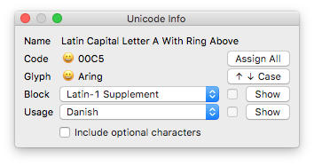

Unicode Info is a floating window that displays various bits of information about the current glyph, like expected glyph name, Unicode, and Unicode block. It has buttons to jump to the corresponding upper- or lowercase letter, show any Unicode block in your font to find any missing glyphs, and to assign Unicodes to all glyphs in the current font.

| Button | Shortcut | Description |
|---|---|---|
| Assign All | — | Assign Unicode values to all glyphs in the current font. Glyph names are parsed according to the AGLFN and GNFUL. |
| Case | — | Jump to the uppercase or lowercase version of the current glyph. Not all glyphs have upper- or lowercase mappings. |
| Show (Block) | — | Show the selected Unicode block in the current font. Between start and end marker glyphs, all glyphs for the selected block will be added to the glyph order. Missing glyphs will be shown empty or as template glyphs. Undefined codepoints are included. |
| Show (Usage) | — | Show all glyphs for the selected orthography in the current font. The different levels of support are marked by glyphs called _BASE_ for required letters, _PUNCT_ for punctuation, and, if you have checked the Include optional characters checkbox, _OPTIONAL_. Between start and end marker glyphs, all glyphs for the selected block will be added to the glyph order. Missing glyphs will be shown empty or as template glyphs. Data is based on the Unicode Common Locale Data Repository. |
Unicode Info is © 2017–2021 by Jens Kutilek.